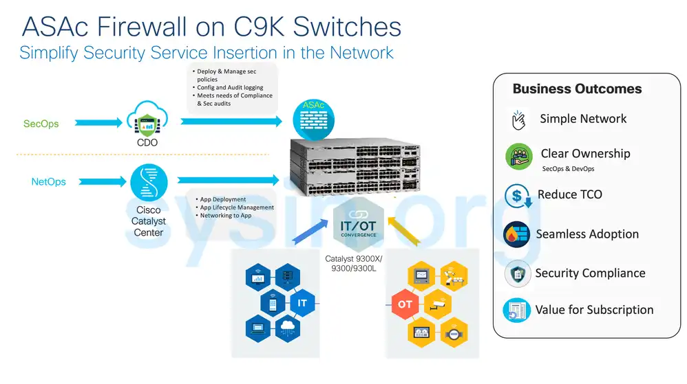
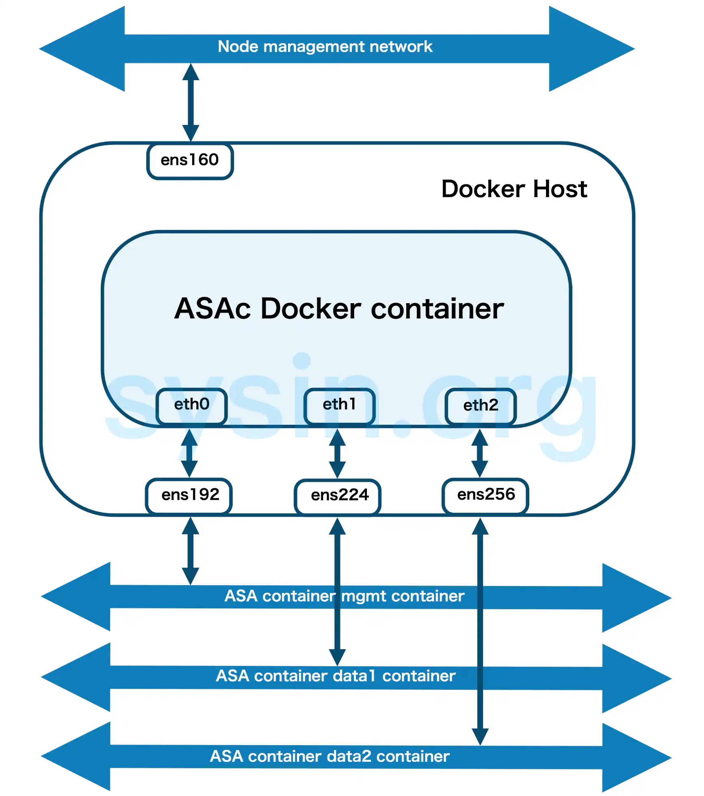
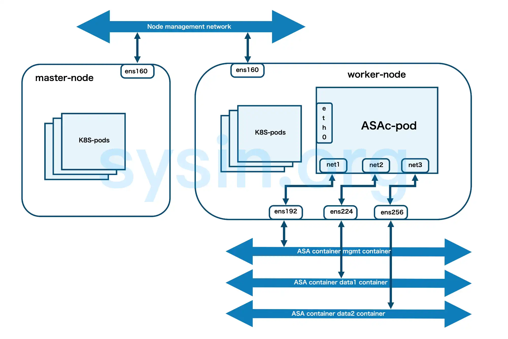

请访问原文链接：Cisco ASAc 9.24.1 - 容器环境中的 ASA 防火墙 (ASA Container) 查看最新版。原创作品，转载请保留出处。
作者主页：sysin.org
Cisco Secure Firewall ASA
值得信赖的防火墙与网络安全平台

思科自适应安全设备 (ASA) 软件
成熟的防火墙和网络安全平台
Cisco ASA 系列安全设备可以保护各种规模的公司网络。它可让用户随时随地使用任何设备进行高度安全的数据访问。这些设备 15 年来一直稳健位居防火墙和网络安全的前列 (sysin)，在世界各地部署了超过 100 万个安全设备。
自适应安全设备 ASA 特点和功能
Cisco Adaptive Security Appliance (ASA) 软件是 Cisco ASA 系列的核心操作系统。它为多种形态的 ASA 设备（独立设备、刀片式设备以及虚拟设备）提供企业级防火墙功能，适用于任何分布式网络环境。ASA 软件还可与其他关键安全技术集成，形成全面的解决方案，以满足持续演进的安全需求。
Cisco ASA 软件的优势包括：
- 提供集成的 IPS、VPN 和统一通信功能
- 通过高性能、多站点、多节点集群帮助组织提升容量并改进性能
- 为高弹性应用提供高可用性
- 实现物理设备与虚拟设备之间的协同
- 满足网络和数据中心的独特需求
- 通过 Cisco TrustSec 安全组标签及基于身份的防火墙技术提供上下文感知能力
- 在每个安全上下文（context）基础上实现动态路由和站点到站点（site-to-site）VPN
Cisco ASA 软件还支持下一代加密标准，包括 Suite B 密码算法集。同时，它还能与 Cisco Cloud Web Security 解决方案集成，提供世界级的基于网页的威胁防护能力。
ASA Container (ASAc)
Catalyst 9300 上的 ASAc 防火墙

在 Catalyst 9300 接入交换机上托管容器化 ASAc 防火墙，不仅减少了将流量引导到集中防火墙的复杂性，还消除了额外硬件的需求。该方案的主要使用场景是跨 IT/OT 域流量的有状态检查。ASAc 支持精细的访问控制、安全远程管理、IPsec 隧道等功能。
ASAc 与 ASAv 在格式上有所不同：ASAc 采用轻量级 Docker 格式，而 ASAv 使用 KVM 格式。尽管存在这种差异，ASAc 在功能上与 ASAv 达到一致。此外，组织可以将现有 ASAv 许可证权益用于 Catalyst 9300 上的 ASAc 实例，这不仅保证了投资保护，也为将现有在服务器上运行的 ASAv 实例迁移到 Catalyst 9300 提供了灵活性。
ASAc 容器最多支持 10 个逻辑接口以实现多分段，并支持路由模式，可为内部和外部接口配置不同子网。ASAc 高可用性（冷备）也支持 9300 堆叠交换机。当 ASAc 在活动交换机上运行时，备用交换机会在后台自动同步应用数据。如果活动交换机宕机或切换期间，备用交换机将接管控制平面，并从该交换机启动 ASAc 容器。由于这是冷备模式，切换期间会有一些应用停机，但应用数据不会丢失。
对于 ASAc 应用管理，Cisco Catalyst Center 提供自动化工作流程，用于生命周期管理和网络配置。在大型部署中，可通过单一 Catalyst Center 工作流程部署多个 ASAc 防火墙，实现网络中防火墙功能的分布式管理。
一旦 ASAc 防火墙部署在 Catalyst 9300 平台上，它将接入 Cisco Defense Orchestrator (CDO) 进行安全策略管理和事件日志记录。CDO 是一个基于云的集中管理与编排平台，简化了包括容器化 ASAv 防火墙在内的一系列 Cisco 安全产品的策略管理。特别适用于在广泛网络中建立统一安全策略，CDO 在策略分析方面表现出色，简化了配置和管理过程。
对于小型部署，ASAc 防火墙应用可通过命令行接口（CLI）或使用 RESTCONF/NETCONF 编程方式部署在 Catalyst 9300 交换机上。Cisco Adaptive Security Device Manager (ASDM) 是集成在 Secure Firewall ASA 映像中的基于 Web 的管理与监控软件，为小型部署提供了用户友好的界面，用于配置、监控和排错防火墙。
Docker 环境中的 ASAc 防火墙
容器是一种软件包，它将代码及其相关依赖打包在一起，例如系统库、系统工具、默认设置、运行时环境等，以确保应用程序能够在计算环境中成功运行。从 Secure Firewall ASA 9.22 版本起，您可以在开源 Docker 环境中部署 ASA 容器（ASAc）。
在 Docker 环境中部署 ASA 容器的指南与限制
- ASA 容器解决方案仅在开源 Kubernetes 和 Docker 环境中经过验证。
- 其他 Kubernetes 框架（如 EKS、GKE、AKS、OpenShift）尚未经过验证。
- 升级将以滚动升级的方式使用新的容器镜像进行。
- 不支持重新启动 ASA 容器。
- 以下功能尚未验证：
- 集群（Cluster）
- 透明模式（Transparent mode）
- 子接口（Subinterfaces）
在 Docker 环境中部署 ASA 容器所需的许可证
使用以下任一许可证启用在 Docker 上部署 ASA 容器：
- ASAc5 – 1 vCPU，2 GB 内存，速率限制 100 Mbps
- ASAc10 – 1 vCPU，2 GB 内存，速率限制 1 Gbps
在 Docker 环境中部署 ASA 容器的解决方案组件
- 操作系统
- Docker 主机上运行 Ubuntu 20.04.6 LTS
- 用于配置验证的 Macvlan 网络
在 Docker 环境中部署 ASA 容器的示例拓扑

在此示例拓扑中，ASA Docker 容器有三个虚拟网络接口 – eth0、eth1 和 eth2，分别连接到以下接口 – ens192、ens224 和 ens256。这些接口映射到 ASAc 的 mgmt、data1 和 data2 网络。接口 ens160 是节点管理接口。
Kubernetes 环境中的 ASAc 防火墙
容器是一种软件包，它将代码及其相关依赖打包在一起，例如系统库、系统工具、默认设置、运行时环境等，以确保应用程序能够在计算环境中成功运行。从 Secure Firewall ASA 9.22 版本起，您可以在开源 Kubernetes 环境中部署 ASAc。在此解决方案中，ASAc 与容器网络接口（CNI）集成，并作为基础设施即代码（Infrastructure-as-Code, IaC）解决方案进行部署。与 CNI 的集成提供了更灵活的网络基础设施部署能力。
在 Kubernetes 环境中部署 ASA 容器的指南与限制
- ASA 容器解决方案仅在开源 Kubernetes 和 Docker 环境中经过验证。
- 其他 Kubernetes 框架（如 EKS、GKE、AKS、OpenShift）尚未经过验证。
- 升级将以滚动升级的方式使用新的容器镜像进行。
- 不支持重新启动 ASA 容器。
- 以下功能尚未验证：
- 集群（Cluster）
- 透明模式（Transparent mode）
- 子接口（Subinterfaces）
在 Kubernetes 环境中部署 ASA 容器所需的许可证
使用以下任一许可证启用在 Kubernetes 上部署 ASA 容器：
- ASAc5 – 1 vCPU，2 GB 内存，速率限制 100 Mbps
- ASAc10 – 1 vCPU，2 GB 内存，速率限制 1 Gbps
在 Kubernetes 环境中部署 ASA 容器的解决方案组件
- 操作系统
- Ubuntu 20.04.6
- Kubernetes 版本 v1.26
- Helm 版本 v3.13.1
- Kubernetes 集群节点 – 主节点与工作节点
- Kubernetes CNI
- POD 管理 CNI – Calico
- ASAc 网络 CNI – Multus macvlan
- 提供的 Helm charts（yaml 文件）用于搭建基础设施即代码（IaC）
在 Kubernetes 环境中部署 ASA 容器的示例拓扑

在此示例拓扑中，ASA 容器（ASAc）Pod 具有三个虚拟网络接口 – net1、net2 和 net3，分别连接到以下工作节点接口 – ens192、ens224 和 ens256。这些工作节点接口映射到 ASAc 的 mgmt、data1 和 data2 网络。接口 ens160 是节点管理接口。接口 eth0 来源于 Calico CNI，而接口 net1、net2 和 net3 来源于 Multus macvlan CNI。
下载地址
ASA container (ASAc) 9.23.1
| Images | File Information | Release Date | Size |
|---|---|---|---|
| ASAc image (for Catalyst 93xx switches) | asac-9.23.1-app-SPA.tar | 24-Mar-2025 | 387.72 MB |
| Cisco Secure Firewall ASA container in a Docker and Kubernetes Environment. | asac9-23-1.tar | 24-Mar-2025 | 741.43 MB |
- 通过捐赠下载此版本：点击 💙支付宝 或者 💚微信支付，扫码备注邮箱（用于识别注册用户，忘记备注请提供时间），
评论区留言指定版本（默认当前最新版），在其他平台留言恕无法处理。 - 提示：捐赠或赞赏属于自愿赠予行为，提交后即表示您对作者的支持与认可。为避免误操作，请在确认前仔细检查金额，支付完成后将无法撤销或退还。
ASA container (ASAc) 9.24.1
| Images | File Information | Release Date | Size |
|---|---|---|---|
| ASAc image (for Catalyst 93xx switches) | asac-9.24.1-app-SPA.tar | 13-Feb-2026 | 432.49 MB |
| Cisco Secure Firewall ASA container in a Docker and Kubernetes Environment. | asac9-24-1.tar | 13-Feb-2026 | 877.33 MB |
- 通过捐赠下载此版本：同上。
相关产品：
- Cisco ASA 9.24.1.5 - 思科自适应安全设备 (ASA) 软件
- Cisco ASAv 9.24.1.5 - 思科自适应安全虚拟设备 (ASAv)
- Cisco ASAc 9.24.1 - 容器环境中的 ASA 防火墙 (ASA Container)
- Cisco Secure Firewall Threat Defense Virtual 7.7.11 - 思科下一代防火墙虚拟设备 (FTDv)
- Cisco Secure Firewall Management Center Virtual 7.7.12 - 思科防火墙管理中心 (FMCv)
- Cisco Secure Firewall Threat Defense Virtual 10.0.0 - 思科下一代防火墙虚拟设备 (FTDv)
- Cisco Secure Firewall Management Center Virtual 10.0.1 - 思科防火墙管理中心 (FMCv)

文章用于推荐和分享优秀的软件产品及其相关技术，所有软件默认提供官方原版（免费版或试用版），免费分享。对于部分产品笔者加入了自己的理解和分析，方便学习和研究使用。任何内容若侵犯了您的版权，请联系作者删除。如果您喜欢这篇文章或者觉得它对您有所帮助，或者发现有不当之处，欢迎您发表评论，也欢迎您分享这个网站，或者赞赏一下作者，谢谢！
 支付宝赞赏
支付宝赞赏  微信赞赏
微信赞赏赞赏一下
敬请注册！点击 “登录” - “用户注册”（已知不支持 21.cn/189.cn 邮箱）。 请勿使用联合登录（已关闭）。